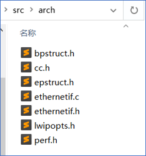

LwIP协议栈移植笔记¶
LwIP简介¶
LwIP是轻量化的TCP/IP协议，由瑞典计算机科学院(SICS)的Adam Dunkels 开发的一个小型开源的TCP/IP协议栈。LwIP具有高度可移植性、代码开源，提供了三种编程接口（API）：RAW API、NETCONN API 和 Socket API，用于与TCP/IP代码进行通信。
通过官网（http://savannah.nongnu.org/projects/lwip/）可获取LwIP源码包及contrib包。源代码包主要包含LwIP内核的源码文件，contrib包中包含部分移植和应用LwIP的demo。contrib包不属于LwIP内核的一部分，但很有参考价值。
以lwip-2.1.2版本的源码包为例，如图x所示，该源码包分为三部分，src文件为LWIP源代码文件，doc文件包含LwIP相关文档，test为LwIP测试文件，使用时主要关注于src文件下的内容。
LwIP内核是由一系列模块组合而成，包括 TCP/IP 协议栈的各种协议、内存管理、数据包管理、网卡接口、基础功能类模块、API等，构成这些模块的源文件就分布在api、apps、core、netif中，头文件则汇总在include中。
- api：NETCONN API和Socket API相关的源文件，只有在操作系统的环境中，才能被编译
- apps：应用程序的源文件，包括常见的应用程序，如httpd、mqtt、tftp、sntp、snmp等
- core：LwIP的内核源文件
- include：LwIP所有模块对应的头文件
- netif：与网卡移植有关的文件

移植接口解析¶
LwIP使用数据结构体netif来描述网卡，并提供统一接口，需要与以太网底层驱动接口函数结合使用，例如底层驱动负责完成网卡的初始化、网卡的数据收发等，当LwIP内核需要发送一个数据包时，就会通过LWIP提供的接口函数去调用底层网卡的发送函数，将数据由硬件接口与软件内核衔接在一起。
contrib文件中包含部分可使用的网卡移植模板文件，其中ethernetif.c文件（contrib-2.1.0\examples\ethernetif目录下的ethernetif.c文件）为底层接口驱动的模板，以 LibSamples 为例，若要基于 LibSample的以太网驱动移植LwIP，则需参考ethernetif.c模板，根据以太网驱动及所需配置进行修改，将底层驱动 ethernet 相关函数填充到LwIP所需的指定功能函数中。
ethernetif.c文件中的函数通常为与硬件打交道的底层函数，当有数据需要通过网卡接收或者发送数据的时候就会被调用，经过LwIP协议栈内部进行处理后，从应用层就能得到数据或者可以发送数据。该文件中包括函数：low_level_init()、low_level_output()、low_level_input()、ethernetif_input()和ethernetif_init()函数。
-
ethernetif_init() LwIP中默认的网卡初始化函数，内部封装了low_level_init()函数
-
ethernetif_input() 该函数用于接收网卡数据，内部封装了low_level_input()函数，在接收完毕时，将数据通过pbuf递交给上层。
-
low_level_init() low_level_init()函数主要是根据实际情况对网卡进行一系列的初始化工作，例如：初始化MAC地址、长度， 设置最大传输包的大小，设置网卡的属性字段等功能。 该函数中需要调用以太网底层驱动中的相关初始化函数，以 MindSDK 为例，该函数需要调用以太网底层驱动 enet_0 的 PHY、MAC、DMA相关初始化函数并进行配置。
-
low_level_output() 该函数用于实现网卡发送数据，是一个底层驱动函数，需根据以太网底层驱动进行相应修改，若想通过一个网卡发送数据，则需要将该数据传入LwIP内核中，经过层层封装最后存储在pbuf数据包中，需注意pbuf以链表的形式存在，数据发送时是以一整个数据包全部发送的。
-
low_level_input() low_level_input()函数用于从网卡中接收一个数据包，并将该数据包封装在pbuf中递交给上层，该函数需要调用以太网底层驱动中的接收函数。
移植LwIP协议栈¶
基于LibSamples的以太网驱动对LwIP进行移植，需先将LwIP源文件中的部分文件添加到LibSamples中，如：src源文件、include头文件。
若想令LwIP运行，还需补充contrib文件中部分内容，如图x所示，由于部分源文件中使用头文件写法为”arch/xx”，因此，在src文件下新建arch文件，并将需要修改的模板文件及contrib中的部分接口文件放入arch文件中。
- ethernetif.c网卡移植模板文件
- cc.h文件主要完成协议栈内部使用的数据类型的定义
- lwipopts.h文件包含了用户对协议栈内核参数进行的配置，若未在lwipopts.h文件中进行配置，则LwIP会使用opt.h中的默认参数
- perf.h文件是实现与系通通计和测量相关的功能，若未使用该功能，则无需修改
- bpstruct.h、epstruct.h由contrib文件下的ports文件所提供，属于堆栈的一部分，无需修改

...
/**
* NO_SYS==1: Provides VERY minimal functionality. Otherwise,
* use LwIPfacilities.
*/
#define NO_SYS 1
...
...
#define LWIP_NO_STDINT_H 1
typedef unsigned char u8_t;
typedef signed char s8_t;
typedef unsigned short u16_t;
typedef signed short s16_t;
typedef unsigned long u32_t;
typedef signed long s32_t;
typedef u32_t mem_ptr_t;
typedef int sys_prot_t;
#define U16_F "hu"
#define S16_F "d"
#define X16_F "hx"
#define U32_F "u"
#define S32_F "d"
#define X32_F "x"
#define SZT_F "uz"
...
#elif defined (__GNUC__)
#define PACK_STRUCT_BEGIN
#define PACK_STRUCT_STRUCT __attribute__ ((__packed__))
#define PACK_STRUCT_END
#define PACK_STRUCT_FIELD(x) x
...
static void
low_level_init(struct netif *netif)
{
struct ethernetif *ethernetif = netif->state;
/* set MAC hardware address length */
netif->hwaddr_len = ETHARP_HWADDR_LEN;
/* set MAC hardware address */
netif->hwaddr[0] = BOARD_MAC_ADDR0;
netif->hwaddr[1] = BOARD_MAC_ADDR1;
netif->hwaddr[2] = BOARD_MAC_ADDR2;
netif->hwaddr[3] = BOARD_MAC_ADDR3;
netif->hwaddr[4] = BOARD_MAC_ADDR4;
netif->hwaddr[5] = BOARD_MAC_ADDR5;
/* maximum transfer unit */
netif->mtu = 1500;
/* device capabilities */
/* don't set NETIF_FLAG_ETHARP if this device is not an ethernet one */
netif->flags = NETIF_FLAG_BROADCAST | NETIF_FLAG_ETHARP | NETIF_FLAG_LINK_UP;
#if LWIP_IPV6 && LWIP_IPV6_MLD
/*
* For hardware/netifs that implement MAC filtering.
* All-nodes link-local is handled by default, so we must let the hardware know
* to allow multicast packets in.
* Should set mld_mac_filter previously. */
if (netif->mld_mac_filter != NULL) {
ip6_addr_t ip6_allnodes_ll;
ip6_addr_set_allnodes_linklocal(&ip6_allnodes_ll);
netif->mld_mac_filter(netif, &ip6_allnodes_ll, NETIF_ADD_MAC_FILTER);
}
#endif /* LWIP_IPV6 && LWIP_IPV6_MLD */
ETH_GPIOInit();
SysTick->CTRL |= ((uint32_t)0x00000004);
SysTick_Config(120000000 / 1000);
ETH_InitTypeDef ptr;
ETH_StructInit(&ptr);
ptr.ETH_AutoNegotiation = ETH_AutoNegotiation_Disable;
ETH_Init(&ptr, ENET_PHY_ADDR);
ETH->DMAOMR &= ~ETH_DMAOMR_OSF;
/* Enable ETH DMA interrupt. */
ETH_DMAITConfig(ETH_DMA_IT_NIS|ETH_DMA_IT_R, ENABLE);
NVIC_InitTypeDef NVIC_InitStruct;
NVIC_InitStruct.NVIC_IRQChannel = ENET_IRQn;
NVIC_InitStruct.NVIC_IRQChannelPreemptionPriority = 0;
NVIC_InitStruct.NVIC_IRQChannelSubPriority = 1;
NVIC_InitStruct.NVIC_IRQChannelCmd = ENABLE;
NVIC_Init(&NVIC_InitStruct);
/* Config macd filter address. */
ENET_SetupMacAddrFilter(0x1u<<31|0x1u<<5, ENET_ADDR_FILTER_NUM, 0u, netif->hwaddr);
/* Set tx dma desp link. */
memset(enet_txdma_desp_tbl, 0, sizeof(enet_txdma_desp_tbl));
for (uint32_t i = 0u; i < ENET_TX_NUM - 1; i++) {
enet_txdma_desp_tbl[0].CS |= TXDMA_DES0_TCH; /* TCH = 1u. */
enet_txdma_desp_tbl[0].BUF1ADDR = (uint32_t)(enet_txbuf[i]);
enet_txdma_desp_tbl[0].BUF2NDADDR = (uint32_t)(&enet_txdma_desp_tbl[i + 1]);
}
enet_txdma_desp_tbl[0].CS |= TXDMA_DES0_TCH; /* TCH = 1u. */
enet_txdma_desp_tbl[0].BUF1ADDR = (uint32_t)(enet_txbuf[ENET_TX_NUM - 1]);
enet_txdma_desp_tbl[0].BUF2NDADDR = (uint32_t)(&enet_txdma_desp_tbl[0]);
/* Set enet tx dma descriptor first address. */
ETH->DMATXDSAR = (uint32_t)(&enet_txdma_desp_tbl[0]);
enet_usable_txdma_desp = &enet_txdma_desp_tbl[0];
/* Set rx dma desp link. */
memset(enet_rxdma_desp_tbl, 0, sizeof(enet_rxdma_desp_tbl));
for (uint32_t i = 0; i < ENET_RX_NUM - 1; i++) {
enet_rxdma_desp_tbl[i].CS |= RXDMA_DES0_OWN; /* RDES0[OWN] = 1. */
enet_rxdma_desp_tbl[i].BL |= RXDMA_DES1_RCH; /* RDES1[RCH] = 1. */
enet_rxdma_desp_tbl[i].BL &= ~ RXDMA_DES1_RBS1;
enet_rxdma_desp_tbl[i].BL |= ENET_RX_BUFLEN; /* RDES1[RBS1] = ENET_RX_BUFLEN. */
enet_rxdma_desp_tbl[i].BUF1ADDR = (uint32_t)enet_rxbuf[i];
enet_rxdma_desp_tbl[i].BUF2NDADDR = (uint32_t)(&enet_rxdma_desp_tbl[i+1]);
}
enet_rxdma_desp_tbl[ENET_RX_NUM - 1].CS |= RXDMA_DES0_OWN; /* RDES0[OWN] = 1. */
enet_rxdma_desp_tbl[ENET_RX_NUM - 1].BL |= RXDMA_DES1_RCH; /* RDES1[RCH] = 1. */
enet_rxdma_desp_tbl[ENET_RX_NUM - 1].BL &= ~ RXDMA_DES1_RBS1;
enet_rxdma_desp_tbl[ENET_RX_NUM - 1].BL |= ENET_RX_BUFLEN; /* RDES1[RBS1] = ENET_RX_BUFLEN. */
enet_rxdma_desp_tbl[ENET_RX_NUM - 1].BUF1ADDR = (uint32_t)enet_rxbuf[ENET_RX_NUM - 1];
enet_rxdma_desp_tbl[ENET_RX_NUM - 1].BUF2NDADDR = (uint32_t)(&enet_rxdma_desp_tbl[0]);
ETH->DMARXDSAR = (uint32_t)enet_rxdma_desp_tbl;
enet_first_rxdma_desp = &enet_rxdma_desp_tbl[0];
ETH_Start();
}
static err_t
low_level_output(struct netif *netif, struct pbuf *p)
{
struct ethernetif *ethernetif = netif->state;
struct pbuf *q;
/* Get current destination address. */
ETH_DMADESCTypeDef * txdma_desp = enet_usable_txdma_desp;
if (0u != (txdma_desp->CS & TXDMA_DES0_OWN) ){
return ERR_USE;
}
#if ETH_PAD_SIZE
pbuf_remove_header(p, ETH_PAD_SIZE); /* drop the padding word */
#endif
uint32_t e_offset = 0; /* record enet module buf offset. */
for (q = p; q != NULL; q = q->next) {
/* Send the data from the pbuf to the interface, one pbuf at a
time. The size of the data in each pbuf is kept in the ->len
variable. */
for (uint32_t i = 0; i < q->len; i++) {
((uint8_t*)(txdma_desp->BUF1ADDR))[e_offset] = ((uint8_t*)(q->payload))[i];
e_offset++;
if (e_offset == ENET_TX_BUFLEN) {
txdma_desp = (ETH_DMADESCTypeDef*)(txdma_desp->BUF2NDADDR);
if ((txdma_desp->CS & TXDMA_DES0_OWN) != 0u) {
return ERR_USE;
}
e_offset = 0;
}
}
}
if (p->tot_len <= ENET_TX_BUFLEN) {
enet_usable_txdma_desp->CS |= TXDMA_DES0_TFS | TXDMA_DES0_TLS | TXDMA_DES0_OWN;
enet_usable_txdma_desp->BL &= ~0x1FFF;
enet_usable_txdma_desp->BL |= p->tot_len; /* TBS1!< Transfer buffer size 1. */
enet_usable_txdma_desp = (ETH_DMADESCTypeDef*)enet_usable_txdma_desp->BUF2NDADDR;
} else {
enet_usable_txdma_desp->CS |= TXDMA_DES0_TFS; /* TFS = 1u. */
enet_usable_txdma_desp->CS &= ~TXDMA_DES0_TLS; /* TLS = 0u. */
enet_usable_txdma_desp->BL &= ~0x1FFF;
enet_usable_txdma_desp->BL |= ENET_TX_BUFLEN; /*!< Transfer buffer size 1. */
enet_usable_txdma_desp = (ETH_DMADESCTypeDef*)enet_usable_txdma_desp->BUF2NDADDR;
for (uint32_t i = ENET_TX_BUFLEN; i < p->tot_len - ENET_TX_BUFLEN; i+= ENET_TX_BUFLEN) {
enet_usable_txdma_desp->CS &= ~TXDMA_DES0_TFS; /* TFS = 0u. */
enet_usable_txdma_desp->CS &= ~TXDMA_DES0_TLS; /* TLS = 0u. */
enet_usable_txdma_desp->BL &= ~0x1FFF;
enet_usable_txdma_desp->BL |= ENET_TX_BUFLEN;
enet_usable_txdma_desp = (ETH_DMADESCTypeDef*)enet_usable_txdma_desp->BUF2NDADDR;
}
enet_usable_txdma_desp = (ETH_DMADESCTypeDef*)enet_usable_txdma_desp->BUF2NDADDR;
enet_usable_txdma_desp->CS &= ~TXDMA_DES0_TFS; /* TFS = 0u. */
enet_usable_txdma_desp->CS |= TXDMA_DES0_TLS; /* TLS = 1u. */
enet_usable_txdma_desp->BL &= ~0x1FFF;
enet_usable_txdma_desp->BL |= (p->tot_len % ENET_TX_BUFLEN);
}
if (0 != (ETH->DMASR Ð_DMA_TransmitProcess_Suspended)){
ETH_ResumeDMATransmission();
}
MIB2_STATS_NETIF_ADD(netif, ifoutoctets, p->tot_len);
if (((u8_t *)p->payload)[0] & 1) {
/* broadcast or multicast packet*/
MIB2_STATS_NETIF_INC(netif, ifoutnucastpkts);
} else {
/* unicast packet */
MIB2_STATS_NETIF_INC(netif, ifoutucastpkts);
}
/* increase ifoutdiscards or ifouterrors on error */
#if ETH_PAD_SIZE
pbuf_add_header(p, ETH_PAD_SIZE); /* reclaim the padding word */
#endif
LINK_STATS_INC(link.xmit);
return ERR_OK;
}
static struct pbuf *
low_level_input(struct netif *netif)
{
struct ethernetif *ethernetif = netif->state;
struct pbuf *p, *q;
u16_t len;
ETH_DMADESCTypeDef * rxdma_desp = enet_first_rxdma_desp;
for (uint32_t i = 0; i < ENET_RX_NUM; i++) {
if ((rxdma_desp->CS & RXDMA_DES0_RLS) != 0) {
len = (uint32_t)(rxdma_desp->CS & RXDMA_DES0_FL)>>16;
break;
} else if ((rxdma_desp->CS & RXDMA_DES0_OWN) != 0) {
return NULL;
} else {
rxdma_desp = (ETH_DMADESCTypeDef*)(rxdma_desp->BUF2NDADDR);
}
}
#if ETH_PAD_SIZE
len += ETH_PAD_SIZE; /* allow room for Ethernet padding */
#endif
/* We allocate a pbuf chain of pbufs from the pool. */
p = pbuf_alloc(PBUF_RAW, len, PBUF_POOL);
if (p != NULL) {
#if ETH_PAD_SIZE
pbuf_remove_header(p, ETH_PAD_SIZE); /* drop the padding word */
#endif
/* We iterate over the pbuf chain until we have read the entire
* packet into the pbuf. */
uint32_t e_offset = 0;
rxdma_desp = enet_first_rxdma_desp;
for (q = p; q != NULL; q = q->next) {
/* Read enough bytes to fill this pbuf in the chain. The
* available data in the pbuf is given by the q->len
* variable.
* This does not necessarily have to be a memcpy, you can also preallocate
* pbufs for a DMA-enabled MAC and after receiving truncate it to the
* actually received size. In this case, ensure the tot_len member of the
* pbuf is the sum of the chained pbuf len members.
*/
for (uint32_t i = 0; i < q->len; i++) {
((uint8_t*)q->payload)[i] = ((uint8_t*)rxdma_desp->BUF1ADDR)[e_offset];
e_offset++;
if (e_offset == ENET_RX_BUFLEN) {
rxdma_desp = (ETH_DMADESCTypeDef*)(rxdma_desp->BUF2NDADDR);
e_offset = 0;
}
}
}
MIB2_STATS_NETIF_ADD(netif, ifinoctets, p->tot_len);
if (((u8_t *)p->payload)[0] & 1) {
/* broadcast or multicast packet*/
MIB2_STATS_NETIF_INC(netif, ifinnucastpkts);
} else {
/* unicast packet*/
MIB2_STATS_NETIF_INC(netif, ifinucastpkts);
}
#if ETH_PAD_SIZE
pbuf_add_header(p, ETH_PAD_SIZE); /* reclaim the padding word */
#endif
LINK_STATS_INC(link.recv);
} else {
LINK_STATS_INC(link.memerr);
LINK_STATS_INC(link.drop);
MIB2_STATS_NETIF_INC(netif, ifindiscards);
}
do {
enet_first_rxdma_desp->CS |= RXDMA_DES0_OWN; /* Set OWN bit. */
enet_first_rxdma_desp = (ETH_DMADESCTypeDef*)enet_first_rxdma_desp->BUF2NDADDR;
} while ((enet_first_rxdma_desp->CS&RXDMA_DES0_OWN) == 0);
if (RESET != (ETH_GetDMAFlagStatus((0x4 << 17)) ) ){ /*!< ENET dma rx fifo not active, need to be weak up. */
ETH_ResumeDMAReception(); /* Wakeup enet dma receive. */
}
return p;
}
/* ENET IRQHandler. */
void ENET_IRQHandler()
{
if (0 != ETH_GetDMAFlagStatus(ETH_DMA_FLAG_R))
{
ethernetif_input(gnetif);
ETH_DMAClearFlag(ETH_DMA_FLAG_R);
}
}
/* initialization enet. */
#define ENET_PHY_ADDR 0x00 /* Select PHY address. */
#define ENET_PHY_CONTROLREG 0u /* PHY control register address. */
#define ENET_PHY_STATUSREG 1u /* PHY status register sddress. */
#define ENET_PHY_RESET 0x8000 /* Set PHY reset, use in ENET_PHY_CR registers */
#define ENET_PHY_SPEED100M 0x2000 /* Set PHY speed. */
#define ENET_PHY_FULLDUPLEX 0x0100 /* Set PHY duplex mode about full duplex. */
#define ENET_PHY_LINK 0x0004 /* PHY link-up. */
#define ENET_PHY_UNIDIRECTIONAL 0x0080 /* PHY has the ability to encode and transmit data from PHY through MII interface, regardless of whether PHY has determined that an effective link has been connected and established. */
#define ENET_PHY_AUTONEGOTIATION 0x1000 /* PHY auto negotiation. */
#define ENET_TX_BUFLEN 1518u /* Tx buffer length. */
#define ENET_TX_NUM 5u /* The number of tx. */
#define ENET_RX_BUFLEN 1518u /* Configure the frame length of a received frame. */
#define ENET_RX_NUM 5u /* The configured number of received descriptor that can be used for receiving. */
#define ENET_ADDR_FILTER_NUM 1u /* Select MAC address filter number from 0~5. */
#define BOARD_MAC_ADDR0 2u
#define BOARD_MAC_ADDR1 0u
#define BOARD_MAC_ADDR2 0u
#define BOARD_MAC_ADDR3 0u
#define BOARD_MAC_ADDR4 0u
#define BOARD_MAC_ADDR5 0u
#define BOARD_IP_ADDR0 169u
#define BOARD_IP_ADDR1 254u
#define BOARD_IP_ADDR2 102u
#define BOARD_IP_ADDR3 101u
#define BOARD_NETMASK_ADDR0 255u
#define BOARD_NETMASK_ADDR1 255u
#define BOARD_NETMASK_ADDR2 255u
#define BOARD_NETMASK_ADDR3 0u
#define BOARD_GW_ADDR0 192u
#define BOARD_GW_ADDR1 168u
#define BOARD_GW_ADDR2 1u
#define BOARD_GW_ADDR3 1u
#define BOARD_UDP_OWN_PORT 6800u
#define TXDMA_DES0_TCH 0x01u<<20
#define TXDMA_DES0_TFS 0x01u<<28
#define TXDMA_DES0_TLS 0x01u<<29
#define TXDMA_DES0_OWN 0x01u<<31
#define RXDMA_DES0_RLS 0x01u<<8
#define RXDMA_DES0_FL 0x3FFFu<<16
#define RXDMA_DES0_OWN 0x01u<<31
#define RXDMA_DES1_RCH 0x01u<<14
#define RXDMA_DES1_RBS1 0x1FFFu
EXTERN volatile uint32_t systime_ms;
void ENET_SetupMacAddrFilter(uint32_t filter, uint32_t addr_id, uint32_t addr_mask, uint8_t * addr)
{
ETH->MACAFR |= filter;
if ( (0u != (filter & ETH_SourceAddrFilter_Normal_Enable)) || (0u != (filter & 0x100)) ) /* Set source address filter. */
{
ETH->MACA0HR = ( 0x1u<<31 | 0x1u<<30 | (uint32_t)addr[4u] | ((uint32_t)addr[5u]<<8u) );;
ETH->MACA0LR = ( (uint32_t)addr[0u] | ((uint32_t)addr[1u] << 8u) | ((uint32_t)addr[2u] << 16u) | ((uint32_t)addr[3u] << 24u) );;
}
else if ( (0u != (filter & 0x10)) || (0u != (filter & 0x100)) ) /* Set destination address filter. */
{
ETH->MACAFR &= ~(0x1u<<4 | 0x1u<<1);
}
if (0u != addr_mask)
{
ETH->MACA0HR|= addr_mask;
}
}
/* Returns the current time in milliseconds, this API from lwip/sys.h */
uint32_t sys_now(void)
{
return systime_ms;
}
uint32_t sys_jiffies(void)
{
return systime_ms * 1000000;
}
void app_lwip_init(void)
{
ip4_addr_t ipaddr;
ip4_addr_t netmask;
ip4_addr_t gw;
IP4_ADDR(&ipaddr, BOARD_IP_ADDR0, BOARD_IP_ADDR1, BOARD_IP_ADDR2, BOARD_IP_ADDR3);
IP4_ADDR(&netmask, BOARD_NETMASK_ADDR0, BOARD_NETMASK_ADDR1, BOARD_NETMASK_ADDR2, BOARD_NETMASK_ADDR3);
IP4_ADDR(&gw, BOARD_GW_ADDR0, BOARD_GW_ADDR1, BOARD_GW_ADDR2, BOARD_GW_ADDR3);
lwip_init();
...
}
void app_lwip_init(void)
{
...
netif_add(&gnetif, &ipaddr, &netmask, &gw, NULL, ðernetif_init, ðernet_input);
netif_set_default(&gnetif);
if (netif_is_link_up(&gnetif))
{
netif_set_up(&gnetif);
}
else
{
netif_set_down(&gnetif);
}
}
void app_tcp_client_init(void)
{
struct tcp_pcb *tcp_client_pcb;
ip_addr_t app_server_ip;
/* Write the IP of the target server into a structure, which is the local connection IP address of the pc. */
IP4_ADDR(&app_server_ip, BOARD_TCP_SERVER_IPADDR0, BOARD_TCP_SERVER_IPADDR1, BOARD_TCP_SERVER_IPADDR2, BOARD_TCP_SERVER_IPADDR3);
/* Assign a structure to the TCP client */
tcp_client_pcb = tcp_new();
if (tcp_client_pcb != NULL)
{
/* Connect with the target server, and the parameters include the target port and the target IP. */
tcp_connect(tcp_client_pcb, &app_server_ip, BOARD_TCP_SERVER_PORT, app_tcp_client_connected);
/* Registered connection error handling callback function. */
tcp_err(tcp_client_pcb, app_tcp_client_connecterror);
}
}
static err_t app_tcp_client_connected(void *arg, struct tcp_pcb *pcb, err_t err)
{
/* Send a greeting string to establish a connection */
tcp_write(pcb, clientstring, strlen(clientstring), 1u);
/* Configure the receive callback function */
tcp_recv(pcb, app_tcp_client_xfer);
return ERR_OK;
}
static err_t app_tcp_client_xfer(void *arg, struct tcp_pcb *pcb, struct pbuf *tcp_recv_pbuf, err_t err)
{
if (tcp_recv_pbuf != NULL)
{
/* Update the receiving window */
tcp_recved(pcb, tcp_recv_pbuf->tot_len);
tcp_write(pcb, tcp_recv_pbuf->payload, tcp_recv_pbuf->len, 1u);
pbuf_free(tcp_recv_pbuf);
}
else if (err == ERR_OK)
{
tcp_close(pcb);
app_tcp_client_init();
return ERR_OK;
}
return ERR_OK;
}
void app_tcp_server_init(void)
{
struct tcp_pcb *pcb;
/* Create new control block. */
pcb = tcp_new();
/* Binding local port and IP address. */
tcp_bind(pcb, IP_ADDR_ANY, BOARD_TCP_SERVER_PORT);
/* Start monitoring. */
pcb = tcp_listen(pcb);
/* Initialize the structure to receive the callback function. */
tcp_accept(pcb, app_tcp_server_accept);
}
static err_t app_tcp_server_accept(void *arg, struct tcp_pcb *pcb, err_t err)
{
tcp_recv(pcb, app_tcp_server_receive);
return ERR_OK;
}
/* TCP server receive processing. */
static err_t app_tcp_server_receive(void *arg, struct tcp_pcb *pcb, struct pbuf *tcp_recv_pbuf, err_t err)
{
if (tcp_recv_pbuf != NULL)
{
/* Update the receiving window */
tcp_recved(pcb, tcp_recv_pbuf->tot_len);
tcp_write(pcb,echostring, strlen(echostring), 1u);
/* send the receive data. */
tcp_write(pcb, tcp_recv_pbuf->payload, tcp_recv_pbuf->len, 1u);
pbuf_free(tcp_recv_pbuf);
tcp_close(pcb); /* close connect. */
}
else if(err == ERR_OK)
{
return tcp_close(pcb);
}
return ERR_OK;
}
void app_udp_client_init(void)
{
ip_addr_t udp_server_addr;
struct udp_pcb * pcb;
IP4_ADDR(&udp_server_addr, BOARD_UDP_SERVER_IPADDR0, BOARD_UDP_SERVER_IPADDR1, BOARD_UDP_SERVER_IPADDR2, BOARD_UDP_SERVER_IPADDR3);
pcb = udp_new(); /* Generate a new UDP control block */
if (pcb != NULL)
{
udp_bind(pcb, IP_ADDR_ANY, BOARD_UDP_OWN_PORT);
udp_connect(pcb, &udp_server_addr, BOARD_UDP_ECHO_PORT);
udp_recv(pcb, app_udp_server_callback, NULL); /* Receive callback. */
app_udp_client_send(pcb, app_udp_client_data);
}
}
void app_udp_server_init(void)
{
struct udp_pcb * pcb;
pcb = udp_new(); /* Generate a new UDP control block */
udp_bind(pcb, IP_ADDR_ANY, BOARD_UDP_OWN_PORT); /* Bind upcb block to any IP address and specified port */
udp_recv(pcb, app_udp_server_callback, NULL); /* Receive callback. */
}
static void app_udp_server_callback(void *arg,struct udp_pcb *upcb,struct pbuf *p,const ip_addr_t *addr, u16_t port)
{
udp_sendto(upcb, p, addr, port); /* Send data to destination address. */
udp_disconnect(upcb); /* Remove the remote end of the pcb. */
}